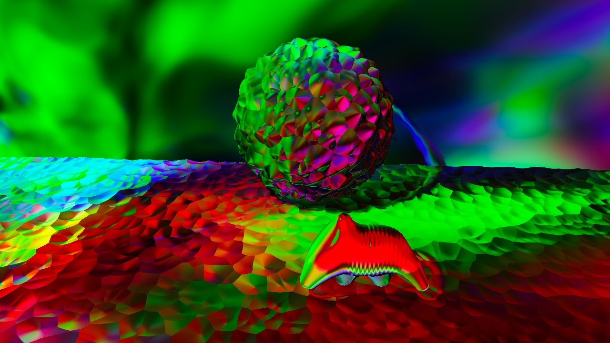
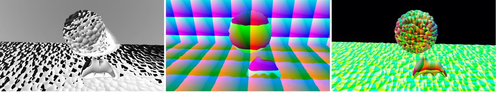
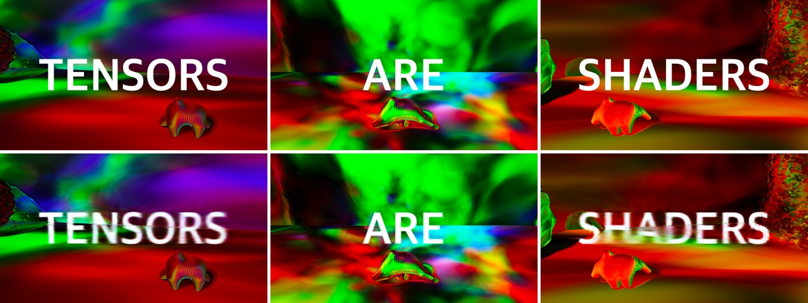

Tensors are shaders. If you are familiar with old-school techniques like shading languages to create your code doodle, you can use tensors as shaders for your code doodle too. This work explores the usefulness of the CPPN with the raymarching algorithm. It's fascinating that the mere forward propagation of a simple neural network with random initial weights somehow can produce an aligned representation of inputs that is visually pleasing.

Deferred rendered channels(position, normal, diffuse, shadow, etc.) in a raymarching scene were used as inputs for a CPPN. And weights of overfitted images were used as projection(like projected light maps). Sounds were created by Music-VAE and a CPPN also applied to it for tweaking its timbre.
